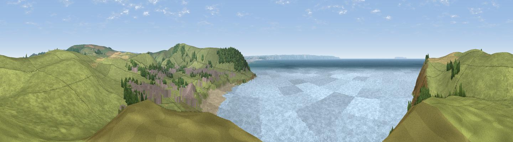

Middleborough Hill
#8943 in England · top 28% of its area beats it · near CroydeWhere it is
The exact computed spot (SS 43125 39925). Click the marker for map links.
The view, rendered

A 360° render of this exact spot computed from the terrain model, tree cover and land cover — summer colours, afternoon light, calibrated against photographs of famous viewpoints. Real trees, hedges and buildings will differ in detail.
The panorama
Grey silhouette: terrain skyline in each direction (720 bearings, Earth curvature and refraction included). Dashed green: skyline with trees (+15 m) and buildings (+8 m) as obstacles. Blue strip: how far the ground is visible on each bearing.
Where the view opens
Wedge length = distance to the farthest visible ground on that bearing (vegetation-aware). Rings at 10, 25 and 50 km.
What fills the view
45% grassland · 45% water · 5% woodland · 2% built-up · 2% bare ground · 1% cropland
Angular shares of the visible panorama (visual magnitude), not map area. Landscape diversity 0.46 (0–1 Shannon).
Key numbers
More beautiful places nearby
The staircase of upgrades: each row has a higher view potential than everything closer. Driving times are estimates from straight-line distance, calibrated against real road routing — check an actual route before setting out.
| Place | Direction | Drive | Score |
|---|---|---|---|
| Napps Cliff Top | NE · 1 km | ~3 min | 75.4 |
| Viewpoint near Croyde | NW · 1 km | ~3 min | 81.3 |
| Viewpoint near Croyde | SE · 2 km | ~6 min | 83.7 |
| Viewpoint near Woolacombe | NE · 3 km | ~8 min | 84.7 |
| Viewpoint near Combe Martin | ENE · 17 km | ~30 min | 86.9 |
| Viewpoint near Combe Martin | ENE · 18 km | ~32 min | 88.9 |
| Holdstone Hill | ENE · 20 km | ~34 min | 90.2 |
| The Knoll | ESE · 122 km | ~146 min | 91.0 |
51.13705, -4.24370 · source: osm peak · position refined by local search. Computed location — check access rights before visiting.